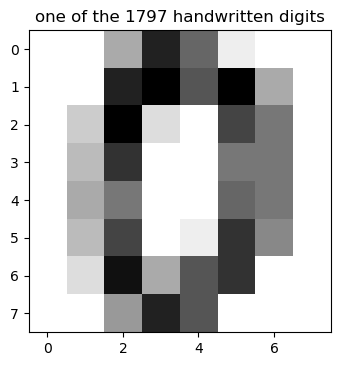

Machine Learning for Recognizing Handwritten Digits
Machine learning is a field of artificial intelligence in which a system is designed to learn automatically given a set of input data. After the system has learnt (we say that the system has been trained), we can use it to make predictions for new data, unseen before. This approach makes it possible to solve complex problems which are difficult or impossible to solve with traditional sequential programming.
Recognizing handwritten text is a problem that traces back to the first automatic machines that needed to recognize individual characters in handwritten documents. Think about, for example, the ZIP codes on letters at the post office and the automation needed to recognize these five digits. Perfect recognition of these codes is necessary to sort mail automatically and efficiently. Included among the other applications that may come to mind is OCR (Optical Character Recognition) software. OCR software must read handwritten text, or pages of printed books, for general electronic documents in which each character is well defined. But the problem of handwriting recognition goes farther back in time, more precisely to the early 20th Century (the 1920s), when Emanuel Goldberg (1881–1970) began his studies regarding this issue and suggested that a statistical approach would be an optimal choice.
The above network displays a network of successive training sets, which consists of the image of a digit & a label, which tells us what the image truly represents.
At first, the first image is processed by the neural network and produces an answer: that is a 9. The connections of neurons in the network be in randomly stated and is providing anything useful, just a random answer.
The answer is compared to the label. Here, the value of (9) is actually different from the label, i.e the value (3). Some feedback is given back such that the network can improve, favoring in tend to give a correct answer.
Then the next example are considered and the neural network learns in such iterative way.
Aim:
The primary aim of this project involves predicting a numeric value, and then reading and interpreting an image that uses a handwritten font.
Hypothesis:
The Digits data set of the scikit-learn library provides numerous datasets that are useful for testing many problems of data analysis and prediction of the results. Some Scientist claims that it predicts the digit accurately 95% of the times. Perform data Analysis to accept or reject this Hypothesis.
Here, I will be using Anaconda Kernel Interpreted VS Code Environment and using Python libraries like Matplotlib, Seaborn, Scikit-Learn.
The Digits Dataset:
The scikit-learn library provides many datasets that are useful for testing many problems of data analysis and prediction of the results. Also in this case there is a dataset of images called Digits. This dataset comprises 1,797 images that are 8x8 pixels in size. Each image is a handwritten digit in grayscale.
Importing Dataset
Import datasets module from sklearn library and load the digits dataset using the load_digits() function.
from sklearn import datasets
digits = datasets.load_digits()
Description of Dataset
After loading the dataset, we can read the information about the dataset by calling the DESCR attribute.
print(digits.DESCR)
The textual description of the dataset, the authors who contributed to its creation, and the references will appear as shown in the output.
Each dataset in the scikit-learn library has a field containing all the information.
Targets
The numerical values represented by images, i.e., the targets, are contained in the digit.targets array.
digits.target
Output:
array([0, 1, 2, ..., 8, 9, 8])
Dataset Shape
Dimensions of the dataset can be obtained using data.shape() function.
digits.data.shape
Output:
(1797, 64)
The output shows that the dataset has 1797 images of 8x8 size(i.e, 8 * 8 = 64 px). In other words, this array could be represented in 3D as a pile of images with 8x8 pixels each.
Images of the handwritten digits
The images of the handwritten digits are contained in an array. Each element of this array is an image that is represented by an 8x8 matrix of numerical values that correspond to grayscale from white, with a value of 0, to black, with the value 15.
Let’s look at the data of the first 8x8 image. Each slot in the array corresponds to a pixel, and the value in the slot is the amount of black in the pixel.
digits.images[0]
Visualization of an array
We can visually check the contents of this result. The following steps can get it done
- Import
pyplotmodule which is under matplotlib asplt. - The
imshow()function is used to display data as an image; i.e. on a 2D regular raster. cmap = gray_rdisplays a grayscale image.interpolation= ‘nearest’displays an image without trying to interpolate between pixels if the display resolution is not the same as the image resolution.- The
title()function is used to display the title on the graph.
import matplotlib.pyplot as plt
plt.imshow(digits.images[0], cmap=plt.cm.gray_r, interpolation='nearest')
plt.title('one of the 1797 handwritten digits')
plt.savefig('plot1.png', dpi=100, bbox_inches='tight')
By running this command, we will obtain the grayscale image as follows: 
Visualization of 10 digits
Using the NumPy and matplotlib libraries, we can display each digit from 0 to 9 which are in the form of an array as images.
- The
figure()function in the pyplot module of the matplotlib library is used to create a new figure with a specified size of (15,4). subplots_adjust(hspace=0.8)is used to adjust the space between the rows of the subplots.- Combine two lists using the
zip()function for easier handling inside the plotting loop. enumerate()method adds a counter to an iterable and returns it. The returned object is aenumerateobject.subplot()function is used to add a subplot to a current figure at the specified grid position.
import numpy as np
plt.figure(figsize=(15,4))
plt.subplots_adjust(hspace=0.8)images_and_labels = list(zip(digits.images, digits.target))
for index, (image, label) in enumerate(images_and_labels[:10]):
plt.subplot(2, 5, index + 1)
plt.imshow(image, cmap=plt.cm.gray_r, interpolation='nearest')
plt.title('Training: %i' % label, fontsize =12)
plt.savefig('plot2.png', dpi=300, bbox_inches='tight')
Flatten the input images
The inputs are 8x8 grayscale images. we can produce a flat array of 64-pixel values so that each pixel corresponds to a column for the classifier.
len()function gives the number of images in the dataset.reshape()function returns an array containing the same data with a new shape.
n = len(digits.images)
print(n)
data = digits.images.reshape((n, -1))
Output:
1797
It was reported that the dataset is a training set consisting of 1,797 images. We determined that it is true.
The Machine Learning Model
An estimator that is useful in this case is sklearn.svm.SVC, which uses the technique of Support Vector Classification (SVC).
“Support Vector Machine” (SVM) is a supervised machine learning algorithm that is mostly used in classification problems.
You can read more about SVM model from Scikit-Learn’s Official Document.
Import the SVM module of the scikit-learn library and create an estimator of SVC type and then choose an initial setting, assigning the values C and gamma generic values.
#import svm model
from sklearn import svm
#Create a SVMClassifier
svc = svm.SVC(gamma=0.001, C=100.)
Split the Dataset
once we define a predictive model, we must instruct it with a training and test set. The training set is a set of data in which you already know the belonging class and the test set is a secondary data set that is used to test a machine learning program after it has been trained on initial training.
Import train_test_split() function which is used for splitting data arrays into two subsets i.e., into train and test sets.
Here we have split the data by assigning 0.01 as test size.
from sklearn.model_selection import train_test_split
x_train, x_test, y_train, y_test = train_test_split(data, digits.target, test_size=0.01, random_state=0)
Train the model
we can train the svc estimator that we defined earlier using the fit() function.
After a short time, the trained estimator will appear with text output.
svc.fit(x_train, y_train)
Output:
SVC(C=100.0, gamma=0.001)
Test the model
we can test our estimator by making it interpret the digits of the test set using predict() function.
y_pred = svc.predict(x_test)
y_pred
Output:
array([2, 8, 2, 6, 6, 7, 1, 9, 8, 5, 2, 8, 6, 6, 6, 6, 1, 0])
We obtain the results in the form of an array.
Visualize the test images
We can plot the images of the predicted digits from the array using the following code.
images_and_predictions = list(zip(x_test,y_pred))
plt.figure(figsize=(18,5))
for index, (image, prediction) in enumerate(images_and_predictions[:19]):
plt.subplot(2, 9, index + 1)
image = image.reshape(8, 8)
plt.imshow(image, cmap=plt.cm.gray_r, interpolation='nearest')
plt.title('Prediction: %i' % prediction)
# save the figure
plt.savefig('plot3.png', dpi=300, bbox_inches='tight')
It is able to recognize the handwritten digits and interprete all the digits of the validation set correctly.
Accuracy of the model
The accuracy score of the model can be obtained using the score() function.
score = svm.score(x_test, y_test)
Output:
Accuracy Score: 1.0
Confusion Matrix
A confusion matrix is a table that is often used to describe the performance of a classification model (or “classifier”) on a set of test data for which the true values are known.
#For Confusion Matrix
from sklearn.metrics import confusion_matrix
import pandas as pd
import seaborn as sn
data = confusion_matrix(y_test, y_pred)
df_cm = pd.DataFrame(data, columns=np.unique(y_test), index = np.unique(y_test))
df_cm.index.name = 'Actual'
df_cm.columns.name = 'Predicted'
plt.figure(figsize = (10,10))
sn.set(font_scale=1.4)#for label size
plt.title('Confusion Matrix')
sn.heatmap(df_cm, annot=True,annot_kws={"size": 12})# font size
A Classification report is used to measure the quality of predictions from a classification algorithm.

Conclusion
Given the large number of elements contained in the Digits dataset, we will certainly obtain a very effective model, i.e., one that’s capable of recognizing with good certainty.
We test the hypothesis by using these cases, each case for a different range of training and validation sets.
After performing the data analysis on the dataset with three different test cases, we can conclude that the given hypothesis is true i.e., the model predicts the digit accurately 95% of the times.
You can find Source code: github@sinanthahir